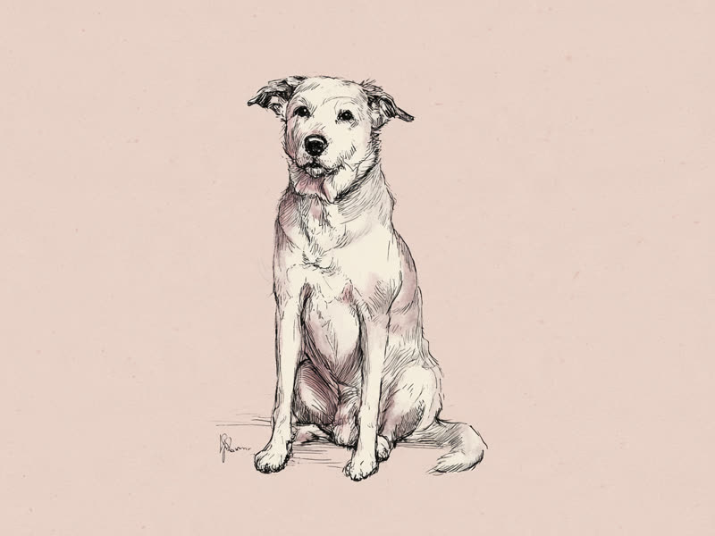

子犬期の急成長と、体の大きさによる老化スピードの違い。 Why do dogs age faster than humans? The short answer: puppies grow up incredibly fast, and larger breeds tend to age even faster in their senior years.
子犬期は「1年で大人になる」超高速成長期
人間の赤ちゃんが歩き始めるまでに1年前後かかるのに対し、犬は生後数ヶ月で骨格がほぼ完成し、1歳を迎える頃には体格・生殖機能ともにほぼ成犬と同じレベルに達します。早見表で「1歳=人間の15歳前後」と換算されるのは、この急成長ペースを反映したものです。犬の体は、短い寿命の中で早く繁殖できるように、成長のスピード自体が人間よりもずっと速く設計されていると考えられています。実際、UCサンディエゴ校のトレイ・アイデカー教授らが2020年に学術誌Cell Systemsで発表した研究では、DNAのメチル化パターンの変化をもとに「1歳の犬はおよそ人間の30歳に相当する」といった換算式が示されており、単純な「1年=7歳」ではとらえきれない、非直線的な老化のペースがあらためて注目されています。
出典: Wang, T. et al. "Quantitative Translation of Dog-to-Human Aging by Conserved Remodeling of the DNA Methylome" Cell Systems, 2020. cell.com
大型犬ほど老化が早いと言われる理由
面白いことに、犬は体が大きいほど寿命が短く、シニア期に入るのも早い傾向があります。人間や他の多くの動物では体が大きいほど長生きする傾向がある一方、犬種間ではこれが逆転するのです。有力な仮説の一つは、大型犬は子犬期に短期間で急激に体重を増やす必要があり、その急成長が細胞レベルでの老化(酸化ストレスや細胞分裂の負担)を早めているというものです。2013年に学術誌The American Naturalistに発表された、74犬種5万頭以上を対象にした研究(Kraus, Pavard, Promislowら)でも、体が大きい犬種ほど老化そのもののスピードが速く、寿命が短くなる傾向が統計的に報告されています。本ツールの年齢換算で大型犬・超大型犬の年間加算値を小型犬より大きく設定しているのは、こうした傾向を早見表としてざっくり反映するためです。
個体差は大きい、あくまで目安として
もちろんこれは平均的な傾向であり、同じ犬種・同じ体重でも生活環境や遺伝、健康管理によって老化のスピードは大きく変わります。年齢換算の数字は「だいたいこのくらい」という目安として捉え、実際の健康状態は定期的な獣医師の健康診断で確認するのがおすすめです。
犬の心拍数は人間よりずっと速く、小型犬で1分間に100〜140回ほど。体が小さいほど心拍数が多くなる傾向があり、これも「小さい犬ほど早く成長し、老化のペースも独特」という体のつくりと関係していると考えられています。